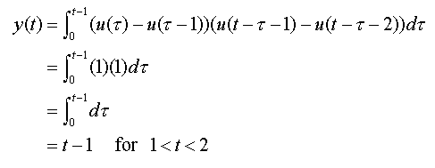

| Convolution is an operation by which the output of an linear time-invariant (LTI) system with a known response can be determined, given an arbitrary input signal. Observe the system to the left, with continuous-time input x(t) and output y(t). Convolution is simply the process that determines the output given the input. |
The unit impulse is used as an example input for the system shown above. When the input to any LTI system is a unit impulse, the output is called the impulse response and is denoted by h(t). So, in this example h(t)=u(t) The system in this particular example is known as an integrator because it produces a unit step signal as the output, according to the system's corresponding mathematical relationship shown to the left of it. In general, however, any relationship which is linear and time-invariant, with unit impulse as input qualifies as a valid impulse response for an LTI system.
| Because such systems are time-invariant, if the impulse is shifted to a new location, the output is simply a shifted version of the impulse response. Time-invariance is a very helpful and important property of continuous-time LTI systems. In the case of the integrator, the output of a shifted unit impulse is a shifted unit-step function as shown to the right. |
The other important property of continuous LTI systems is linearity, which allows that the output of an LTI system can be expressed as the sum of the outputs obtained from the individual components that make up the input signal. If both linearity and time-invariance hold, the output of the system can be found through a relation known as the Convolution Integral:
The above relationship means "x(t) convolved with h(t)" where h(t) is the impulse response of the LTI system. The variable t is taken to be a constant for the integration, which is done over the dummy variable tau for all nonzero values of the input function. After integration the tau variable disappears, leaving a function of time which is in the output of the system.
Let us look at the argument of the impulse response function in the integral. Note that it is negated as a function of tau, and shifted by an amount t. This effectively flips the function over the vertical axis and shifts it along forward by an amount equal to t. Depending upon the value of t, the shifted and flipped impulse response and input function will have a particular product and thus integrate into different piecewise functions. Continuous convolutions therefore often result in functions with multiple distinct regions.
Consider an example using the following system and input:
The input, shown on the left, is a pulse of length one; the impulse response as seen on the right is a pulse of length one delayed by one. Taking these two functions and converting them into the forms used in the convolution integral gives the following:
As explained above, the impulse response has been flipped over the vertical axis and is shown in red. This particular instance of the impulse response is displayed for t=0; In this case, the leading edge of the pulse is t-1. The input function x(t) is simply expressed in terms of the variable tau instead of t, which is also the axis variable of integration.
If you visualize h(t) sliding along
the tau axis and through x(t), four distinct regions of
integration become apparent. The first is for t < 1, which is
the same as the initial situation shown above. No overlap exists between
the two pulses x(t) and h(t) for this region and the integral
simply goes to zero. The second region is for 1 < t < 2,
shown to the right. The pulses overlap in this region in the interval from
t = 0 to t =
t-1. The corresponding integral is evaluated below:

A third region consists of 2 < t < 3,
when the leading edge of the impulse response slides passed the leading edge of
the input signal. This is shown in the plot to the right. In this
region the pulses overlap from t = t-2 to
t = 1. The integral for this region is
evaluated as shown below:
| After t=3, no overlap occurs and the integral goes to zero. Note that at t = 2 between the second and third regions, both pulses completely overlap and the integral evaluates to the greatest value of the output signal. Combining the above results, our output signal is a piecewise linear function defined and plotted to the right. |
You may simulate this on the convolution GUI by setting the input as an impulse of length one, and the impulse response the same but shifted by one. Observe carefully the contents of the Multiplication window as you slide the impulse response function along in the top window; note how the area shown relates to the integrated value in the Convolution window.
Another important property of convolution is Commutativity, which stipulates that the order of convolution does not matter. Flipping and shifting the input signal x(t) instead of the impulse response h(t), therefore, will have the same result as the procedures above. The following proof establishes that convolution is indeed commutative:
The new dummy variable sigma is insignificant in the evaluation of the integral; all operations are done exactly as shown in the convolution example above, substituting x(t) for h(t).
Does it all make sense to you? If you are not sure go over it again, and make sure to attempt several examples with the different functions offered in the GUI so you can verify them.
If you still do not get it, let me know what is confusing you. Send me mail by clicking on my name in the Overview section. I want to make this tutorial understandable and any feedback is appreciated!